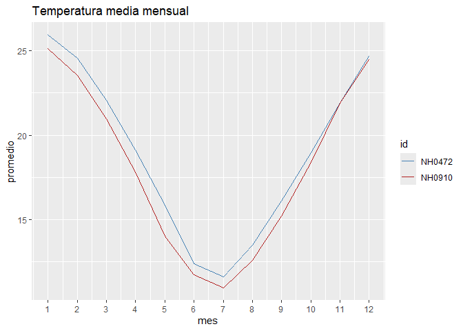

cienciademetadatosR es un paquete de R para trabajar con datos meteorológicos diarios de estaciones del INTA. Sirve para descargar los datos de una estación, resumir sus temperaturas y graficar cómo varía la temperatura a lo largo del año.
Instalación
Se puede instalar la versión en desarrollo desde GitHub:
# install.packages("devtools")
devtools::install_github("joaquin0307/cienciademetadatosR")Funciones
| Función | Qué hace |
|---|---|
leer_datos() |
Descarga los datos de una estación y los devuelve como data frame. |
tabla_resumen_temperatura() |
Calcula mínima, máxima, promedio y desvío de la temperatura por estación. |
grafico_temperatura_mensual() |
Grafica la temperatura media de cada mes, con una línea por estación. |
El paquete también incluye el conjunto de datos estaciones, con registros diarios de temperatura de 5 estaciones entre 2010 y 2017, para usar en los ejemplos.
Ejemplo
library(cienciademetadatosR)
head(estaciones)
#> id fecha temperatura_abrigo_150cm temperatura_abrigo_150cm_maxima
#> 1 NH0472 2010-01-01 23.35 27.5
#> 2 NH0472 2010-01-02 23.85 31.9
#> 3 NH0472 2010-01-03 26.00 31.8
#> 4 NH0472 2010-01-04 28.00 34.5
#> 5 NH0472 2010-01-05 27.50 36.1
#> 6 NH0472 2010-01-06 22.05 25.5
#> temperatura_abrigo_150cm_minima
#> 1 19.2
#> 2 15.8
#> 3 20.2
#> 4 21.5
#> 5 18.9
#> 6 18.6Resumen de temperaturas de dos estaciones:
tabla_resumen_temperatura(estaciones, ids = c("NH0472", "NH0910"))
#> # A tibble: 2 × 5
#> id temp_minima temp_maxima promedio desvio
#> <chr> <dbl> <dbl> <dbl> <dbl>
#> 1 NH0472 -6 40.6 19.0 5.94
#> 2 NH0910 -7.5 43 18.0 6.22Temperatura media mensual:
grafico_temperatura_mensual(
estaciones,
ids = c("NH0472", "NH0910"),
colores = c("steelblue", "firebrick"),
titulo = "Temperatura media mensual"
)
Para un recorrido más completo, ver la viñeta: vignette("cienciademetadatosR").
Autores
- Máximo Bustos
- Joaquín Larroux
Trabajo realizado para el curso Introducción a la programación.